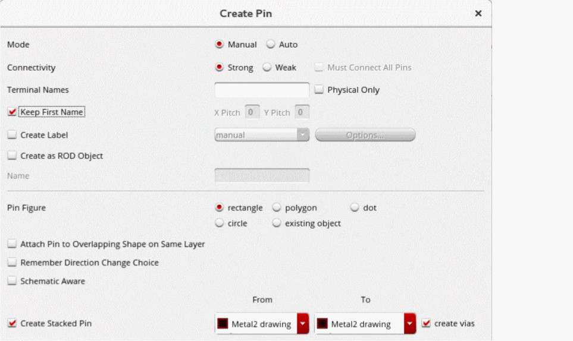

Stacked Pins and Vias in the Pin Tool
(Layout EXL and higher tiers only) A pin stack is a stack of series-connected pins that are integrated vertically. Using stacked pins helps improve the area utilization of the layout. Pin stacking is supported for both weakly and strongly-connected pins. For strongly-connected pins, you can stack multiple instances of the same pin that are present on different layers. For weakly-connected pins, different pin figures of a single pin instance are stacked on different layers.
In the following image, six instances of a strongly-connected pin, A, present on different layers are stacked to achieve a pin stack.
The following figure displays a pin stack that consists of four pins.
You can use the Move command to separate pins from a pin stack.
Creating Pin and Via Stacks using the Create Pin Form
To create a pin stack using the Create Pin Form:
-
In the layout window, choose Create – Pin.
Alternatively, click the Create Pin icon on the Create toolbar or right-click any free space on the design canvas to display the Layout shortcut menu and select Create – Pin.
The Create Pin form appears. Set the mode, define the connectivity and specify one or more terminal names.
 - Choose Create Stacked Pin in the Create Pin form.
-
Specify the metal layer and purpose name in the From and To fields, where From and To specify the starting and ending layer. For example, if you set From to
metal1drwand To tometal4drw, a pin stack is created that includes the pins in these layers. You can also create a via between the From and To metal layers based on the geometry of the pin.
-
Select create vias in the Create Pin form, a via stack is created along with the stacked pins. A via stack is a set of overlapping vias on adjacent layers that are present on the same net. Via stacks reduce the area of the metal and leave more free space for routing.
Consider six pins placed fromMetal_1toMetal_6through a via stack. FromMetal_1toMetal_2, one via is created namedM2_M1v, and fromMetal_2toMetal_3, another via is created namedM3_M2v. The combined five vias create a via stack namedStack1_Metal1_Metal_6as shown in the following figure. Vias can be viewed in the layout on selection of the Via Stacks field in the Edit Via Stack Properties form.
Creating Pin and Via Stacks using the Pin Tool
To create a stacked pin using the Pin Tool:
- Choose Plan – Pin Planning – Pin Tool. The Pin Browser is displayed.
- Select the required pin in the Pin Browser.
-
Right-click and choose Create Stacked Pin.
The Create Stacked Pin form is displayed.
-
In Connectivity, specify if you want to create the pin stack with strong connectivity or weak connectivity. The pin model can be viewed in the layout in the Pin Connectivity Setting form.
For strongly-connected pins, you can stack multiple instances of the same pin that are present on different layers. For weakly-connected pins, different pin figures of a single pin instance are stacked on different layers as shown in the following figure.
-
In the Layer and Vias section, specify the metal layer and purpose name in the From and To fields, where From and To specify the starting and ending layers.
For example, if you set From toMetal1drwand To toMetal3drw, a pin stack is created that includes the pins in these layers.
The following figure displays a pin stack that consists of three pins.

-
Choose Create Vias to create a via stack along with the stacked pins. A via stack is a set of overlapping vias on adjacent layers that are present on the same net. Via stacks reduce the area of the metal and leave more free space for routing.
Consider four pins are placed fromPolytoMetal_2through a via stack. FromMetal_1toMetal_2, one via is created namedM2M1_stdv, and fromLiPOtoMetal_1, another via is created namedMetal_LiPO. The three vias combined create a via stack namedStack1_Poly_Metal_2as shown in the following figure.
Vias can be viewed in the layout on selection of the Via Stacks field in the Edit Via Stack Properties form.
Related Topics
Return to top